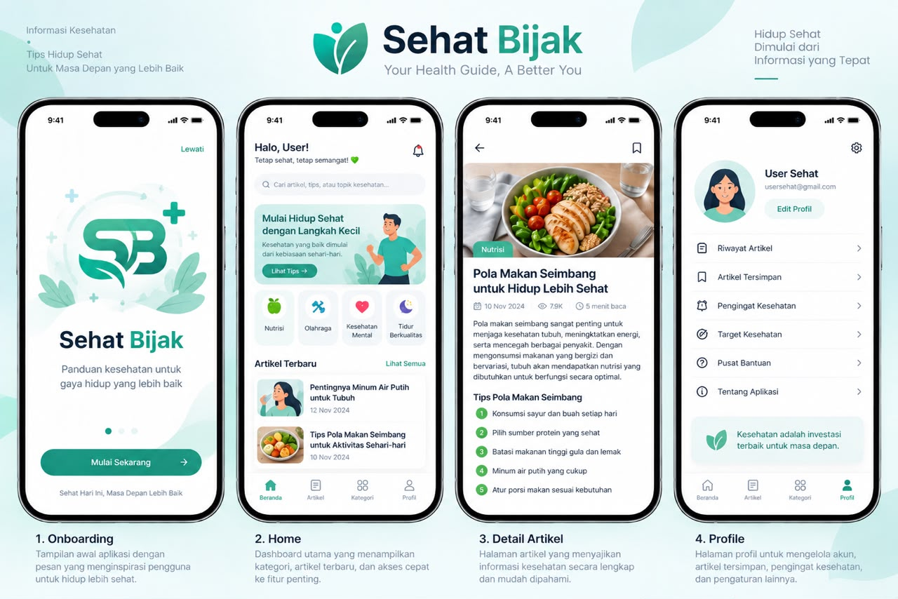

Sehat Bijak - Health Guide App UI/UX Design merupakan proyek perancangan antarmuka dan pengalaman pengguna (UI/UX) untuk aplikasi panduan kesehatan berbasis mobile. Aplikasi ini dirancang untuk membantu pengguna mengakses informasi kesehatan secara mudah, cepat, dan terorganisir melalui desain yang modern, intuitif, dan berfokus pada kebutuhan pengguna. Dengan pendekatan user-centered design, aplikasi ini bertujuan memberikan pengalaman yang nyaman dalam memperoleh edukasi kesehatan dan panduan hidup sehat.
... Lihat Selengkapnya